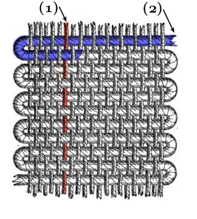
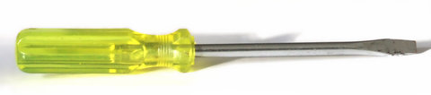
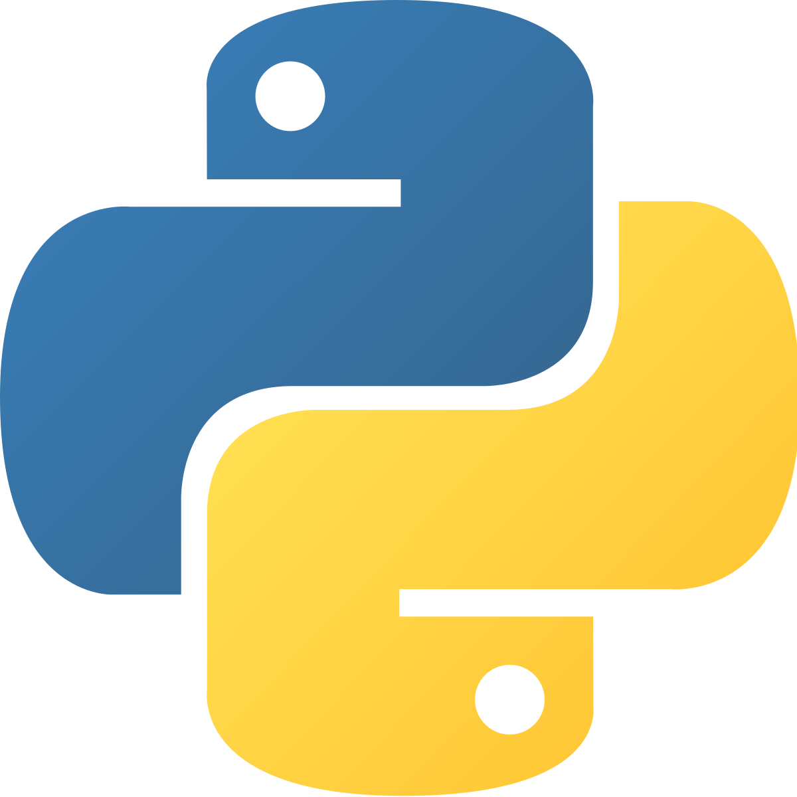
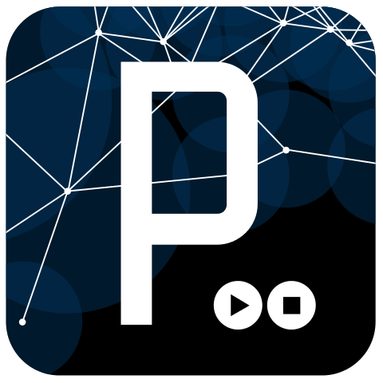
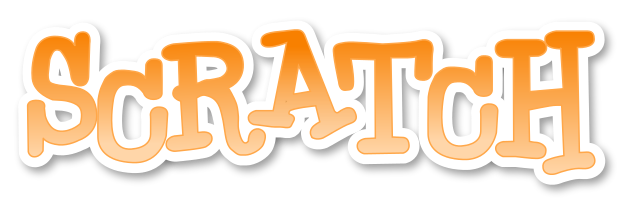
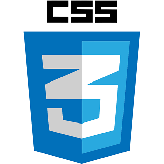
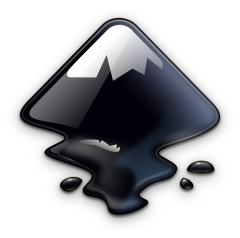
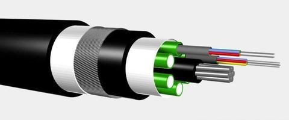
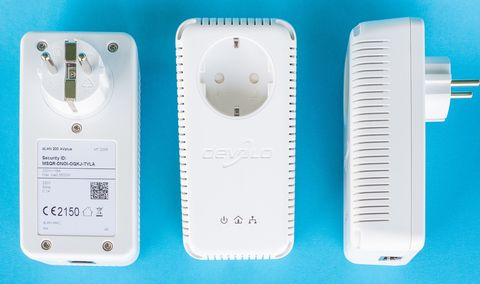

Copyright and intellectual property¶
Contents¶
Copyright © 2013-2025 por Carlos Félix Pardo Martín.
The published contents, such as texts, images, plans, graphics, photographs, etc. unless otherwise indicated, are distributed under a Creative Commons Attribution-ShareAlike 4.0 International license (CC BY-SA 4.0)
You can read a summary of the CC BY-SA 4.0 license
or the full text of the CC BY-SA 4.0 license
To acknowledge authorship of the content, you must add a link to the page where the content is found, cite the name of the author and cite the license used for the original content CC BY-SA 4.0 International.
Computer programs¶
The computer programs are distributed under a GPL v3 license, unless otherwise stated.
You can read a copy of the GPL license v3.0 on the Free Software Foundation website.
Software libraries¶
The Arduino libraries are distributed under the GNU Lesser General Public License Version 3, unless otherwise noted.
Web page¶
The web page is created with Sphinx using a theme provided by Read the Docs
The Picuino name and logo appearing on the website are a registered trademark.
External images¶
The images shown below are taken from sources external to this page. Each image shows next to it the credits.
Materials¶
Image by Kette_und_Schuß.png licensed under Creative Commons Attribution-Share Alike 3.0 license

Image by Miguel Á. Padriñán under free Pexels license

Image Temperguss-Schraubzwinge by BESSEY Tool GmbH & Co. KG under the Creative Commons Attribution-Share Alike 3.0 Germany license

Image Yellow-flathead-screwdriver by Iainf under Creative Commons Attribution-Share Alike 3.0 Unported License

Image Kombinationszange by Stefan Pohl under Public Domain license.

Image Steel ruler closeup by Ejay under Creative Commons Attribution-Share Alike 4.0 International License
Mechanics¶
Image FreeCAD Logo by Yorik van Havre under the GNU Lesser General Public License

Image line art swing by frankes under Creative Commons Zero 1.0 Public License Domain License

Image Jib crane under Creative Commons Attribution-Share Alike 4.0 International license

Image banner graphic 1 by Stephen J. Ressler with all rights reserved.
Programming¶
Image Python logo by Python Software Foundation under PSF Trademark Usage Policy license

Image Processing logo of Processing Foundation protected as a Registered Trademark.
Image Arduino logo of Unknown Author protected as Registered Trademark.

Image Scratch logo by MIT licensed under Creative Commons Attribution-Share Alike 3.0 Unported and protected as a Registered Trademark.
Image App Inventor logo by Massachusetts Institute of Technology licensed under the Creative Commons Attribution-Share Alike 3.0 Unported License

Image of Olympic Flag by Pierre de Coubertin under Public Domain license.
Computing¶

Image Computer by AJ licensed under the Creative Commons Zero 1.0 Public Domain License

Image Beach calm clouds idyllic by Asad Photo Maldives under the free Pexels license

Image Spa elec gen by Zmzmzm2 licensed under the Creative Commons Attribution-Share Alike 4.0 International License

Image Portrait by Metropolicons from Flaticon under Freepik license
Image Official HTML5 Logo from W3C under Creative Commons Attribution 3.0 Unported license

Official CSS3 Logo Image by W3C under Creative Commons Attribution 4.0 International License

Image Current Official Inkscape Logo by Andrew Michael Fitzsimon licensed under a Creative Commons Attribution-Share Alike 3.0 Unported License

Image Computer keyboard ES layout by Oona Räisänen (Mysid) under Creative Commons CC0 1.0 Universal Public Domain Dedication license
Image LibreOffice 6.1 Writer Icon by The Document Foundation under the Creative Commons Attribution-Share Alike 4.0 International License

Image ODT File Format free icon from Freepik from Flaticon under Freepik license
Communications¶

Image Belkin Wireless G Router F5D7231-4 Version 1000de-1121 by Raimond Spekking under the Creative Commons Attribution-Share Alike 4.0 License

Image Optical fiber cable by Srleffler under Creative Commons Attribution-Share Alike 3.0 License

Image Devolo dLAN 200 AVplus - 5016 by Sven Teschke / Lizenz under Creative Commons Attribution-Share Alike 3.0 license from

Image Coaxial cable cut by FDominec under Creative Commons Attribution-Share Alike 3.0 license

{kind=link}
{kind=link}
{kind=link}
{kind=link}
{kind=link}
{kind=link}
{kind=link}
{kind=link}
{kind=link}
{kind=link}
{kind=link}